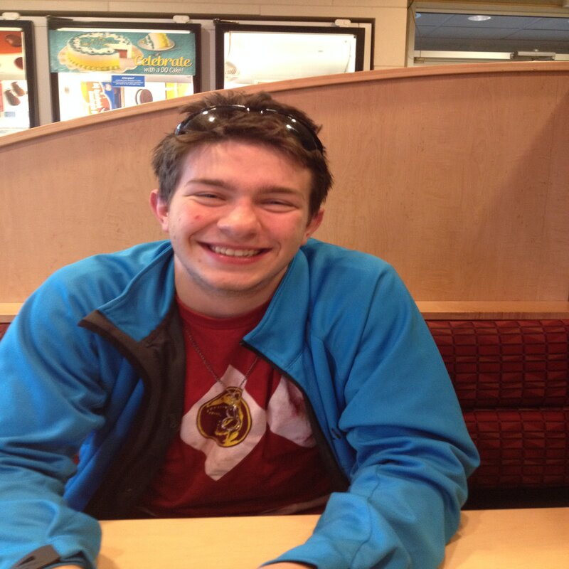
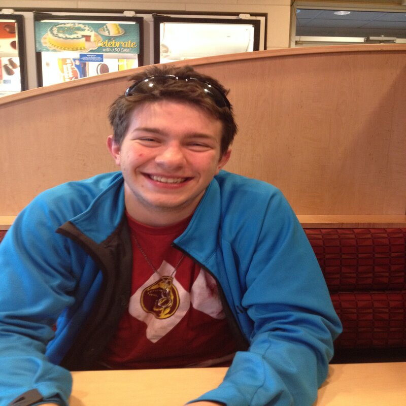
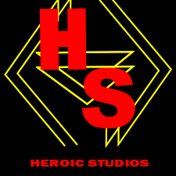

Overview
Purpose
[the purpose of this website is to provide a catalog for models and their price. It is also to provide a description of items listed and links on where to find them.]
Audience
[this website is for anyone interested in buying cosplay props, as well as those interested in project makeing and articulated fidgit toys.]
Branding
Website Logo
Style Guide
Color Palette
| Primary | Secondary | Accent 1 | Accent 2 | Accent 3 |
|---|---|---|---|---|
Typography
Heading Font: [Times new roman]
Paragraph Font: [Helvetica]
Normal paragraph example
I choose these fonts because they are the safest in terms of reading quility and they look good on lots of different page layout.
Colored paragraph example
I choose these fonts because they are the safest in terms of reading quility and they look good on lots of different page layout.
Navigation
Site Map
Content
Home page
[Welcome to my website. This websites goal is to provide links to websites that will allow you to order models created by 3d modelers like Cinderwing and Heroicstudios. All which will be shown on these pages. This website serves as a way for people to buy custom 3d printed models that are articulated as well as cosplay props. ]
Images for the Home page
 

[cinderWing models]
[This page is listed with all my articulated models created and sold by the Cinderwing company. As a licenced seller I have over 100 models from them but they have many more on websites like etsy and patreon. if you dont like what you see feel free to drop by the other places listed. ]
Images for the Page 2

[Heroic studio models]
[This page shows all my printable models which where designed by Heroic studio which will be referenced below. In order to buy these models you can order from the websites provided or sign up for Heroicstudio's patreon if you own your own 3d printer. I specialize in power ranger cosplay props but also have many other models made for prop use.]
Images for the Page 3
Wireframes
Create three wireframes for your site. One for each page and list them here
Home
[Here will be information about me and the companeys I work with and my own companey.]
[Page 2]
[this page will provide information about my cinderwing products and list some products and pricing information ]
[Page 3]
[This page will hold infomation about Heroicstudios another company I work with and some of the products they make that I sell.]